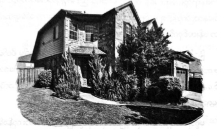

မီးကျွမ်းကုန်သော ကွတ်ကီးများ
အရိပ်ခရီး သွားမည့်သူများ အနေဖြင့် အောက်ပါအချက်များကို ကြောက်တတ်ပါက မသွားသင့်ဟု ပါစီ အကြံ ပြုချင်လာသည်။
(၁) အမှောင်
(၂) ကျောတစ်ခုလုံး စိမ့်တက်လာခြင်း
(၃) ထူးထူးဆန်းဆန်း အသံများ
(၄) မြန်လွန်းသဖြင့် မျက်နှာတစ်ခုလုံး ပျောက်သွားပြီလားဟု ထင်ရခြင်း
သို့သော် အရိပ်ခရီးသွားခြင်းမှာ ပါစီအတွက် အလွန်သဘောကျစရာ ဖြစ်သည်။ တစ်ခဏတွင် ဘာမှမမြင်ရဘဲ မစ္စ အိုလာရီ၏ လည်ပတ်ကို ကိုင်ထားရပြီး နောက်တစ်ခဏတွင် မြင်ကွင်းက လုံးဝ ပြောင်းလဲသွားခဲ့သည်။ ကွန်နက်တီ ကပ် ရှိ တောင်ကုန်းပေါ်ရောက်နေပြီး သစ်ပင်များစွာရှိကာ ကျောက်နံရံ အနိမ့်လေးများနှင့် အိမ်ကြီးကြီးများ ရှိနေသည်။ တောင်ကုန်းတစ်ဖက်တွင် အဝေးပြေး လမ်းမကြီးကို တွေ့ရ၏။ နှစ်ထပ်အိမ်ကြီးဖြစ်ကာ လမ်းမကြီးဘေးတွင် ရှိသည့်တိုင် အလွန်ခေါင်သော နေရာတွင် ရောက်နေသကဲ့သို့ ခံစားရသည်။ မီးဖိုပြတင်းပေါက်တွင် မီးများ လင်းနေသည်ကို မြင်ရ သည်။ ပန်းသီးပင်အောက်တွင် အိုမင်းကာ သံချေးတက်နေသော ဒန်းတစ်ခုကို တွေ့ရသည်။
ခြံဝင်းကျယ်ကြီးနှင့် ထိုကဲ့သို့ အိမ်မျိုးတွင် နေရန် ပါစီတစ်ခါမှ စိတ်မကူးခဲ့ဖူး။ တစ်သက်လုံး တိုက်ခန်းသေးသေး နှင့် ကျောင်းရှိ အဆောင်ခန်း သေးသေးများတွင် နေခဲ့ရသည်။ ဤကဲ့သို့ အိမ်မျိုးမှ ဘာကိစ္စ လုပ်ခ် ထွက်ပြေးချင်ရသလဲ ပါစီ နားမလည်နိုင်။
မစ္စအိုလာရီမှာ ယိမ်းထိုးနေပြီး အရိပ်ခရီးသွားခြင်းက အင်အား ကုန်ခမ်းစေနိုင်သည်ဟု နီကို ပြောခဲ့သည်အား ပါစီ သတိရမိသည်။ ကျောပေါ်မှ ဆင်းလိုက်လျှင် မစ္စအိုလာရီမှာ အားပါးတရ သမ်းဝေနေပြီး တီရက်ဇ်ဒိုင်နိုဆောပင် ကြောက်လန့် ပြေးလောက်သည့် သွားကြီးများကို မြင်ရသည်။ ထို့နောက် တစ်ပတ်လှည့်ကာ ဝုန်းခနဲ ပစ်လှဲချလိုက်လျှင် မြေကြီးများပင် တုန်ခါသွား၏။ အရိပ်များ ပို၍နက်မှောင်လာပြီး ဘေးတွင် နီကို ရုတ်တရက် ပေါ်လာသည်။ ယိုင်သွား သဖြင့် သူ့ လက်ကို ပါစီ ဖမ်းဆွဲထားလိုက်ရသည်။
“ဘာမှ မဖြစ်ဘူး …”
ဟုဆိုရင်း မျက်လုံးကို ပွတ်နေ၏။
“ဘယ်လိုလုပ် အရိပ်ခရီး သွားတတ်သွားတာလဲ”
“အလေ့အကျင့်ပဲလေ … စစချင်း နံရံနဲ့ ခဏခဏ ဝင်ဆောင့်မိတယ် … တရုတ်ကို မတော်တဆ ရောက်ရောက် သွားတယ်”
မစ္စအိုလာရီမှာ ဟောက်၍ အိပ်ပျော်နေပြီ ဖြစ်သည်။ နောက်ဘက်တွင်သာ ကားလမ်း မဟုတ်လျှင် ဟောက်သံ ကြောင့် ပတ်ဝန်းကျင်တစ်ခုလုံး လန့်နိုးလာနိုင်သည်။
“မင်းရော တစ်ရေးလောက် အိပ်ဦးမလား”
နီကို ခေါင်းခါပြရင်း …
“ပထမဆုံး အရိပ်ခရီးသွားတော့ တစ်ပတ်လောက် မေ့နေတာ … ခုတော့ အိပ်ငိုက်ရုံပါပဲ … ဒါပေမဲ့ တစ်ညကို တစ်ခါ နှစ်ခါပဲ ခရီးသွားနိုင်တယ် … မစ္စအိုလာရီလည်း ချက်ချင်းကြီး ဘယ်မှ သွားနိုင်မှာ မဟုတ်ဘူး”
“ဒါဆို ကွန်နက်တီကပ်မှာ ခဏ အပန်းဖြေရမယ်ပေါ့ … ဟုတ်လား … အခု ဘာဆက်လုပ်ကြမှာလဲ”
“တံခါးဘဲလ်ခလုတ် နှိပ်ကြစို့ …”
ပါစီသာ လုပ်ခ်အမေနေရာတွင် ဆိုပါက ညဘက်ကြီး ရောက်လာသော ကောင်လေးနှစ်ယောက်အား အိမ်တံခါး ဖွင့်မပေးနိုင်။ သို့သော် လုပ်ခ်၏ အမေမှာ ပါစီ ထင်သကဲ့သို့ လုံးဝမဟုတ်ချေ။ တံခါးဝမရောက်ခင် ထိုအချက်က ပို၍ သေချာသွားခဲ့ပြီး လမ်း၏ တစ်ဖက်တစ်ချက်တွင် အရုပ်ဆိုင်များ၌ တွေ့ရတတ်သော အမွေးပွ ရုပ်လေးများကို စီတန်း ထား၏။ ပုံစံများအရ ဤနေရာတွင် ရှိနေသည်မှာ အလွန်ကြာပြီဟု သိနိုင်ပြီး အချို့အရုပ်များဆိုလျှင် သစ်ပင်များပင် ထွက်စ ပြုနေသည်။
အိမ်ရှေ့တံခါးကို စိမ်းပြာရောင်သုတ်ထားပြီး ကတ်စ်တဲလ်လန် ဟူသော နာမည်အား အင်္ဂလိပ်လိုသာမက ဂရိ ဘာသာဖြင့်ပါ ရေးထိုးထားသည်။
“....”
“အဆင်သင့်ဖြစ်ပြီလား …”
တံခါးခေါက်ရန် နီကို လက်နှင့် ထိရုံလေးမှာပင် တံခါးက ပွင့်သွားခဲ့သည်။
“လုပ်ခ် …”
အဘွားအိုတစ်ယောက်၏ ပျော်ရွှင်နေဟန်ရှိသော အသံအား ကြားလိုက်ရသည်။ ဆံပင်ဖြူများမှာ တစ်ခေါင်းလုံး ထိုးထိုးထောင်ထောင် ထွက်နေပြီး ပန်းရောင် ဝတ်စုံမှာ မီးကျွမ်းရာများ၊ ပြာမှုန်များနှင့် ညစ်ပေနေသည်။ ပြုံးလိုက်လျှင် သဘာဝ မကျသလို ခံစားရပြီး မျက်စိပင် မြင်ရဲ့လားဟု စဉ်းစားစရာ ဖြစ်စေ၏။
“သားလေး …”
သူမက နီကို့ကို ဖက်ထားလိုက်သည်။ ဘာကြောင့် လုပ်ခ်နှင့် နီကို့အား မှားရသလဲ ပါစီ စဉ်းစားမရ (နှစ်ယောက် မှာ လုံးဝ ရုပ်ချင်းမတူကြ)။
ပါစီကို ပြုံးကြည့်ရင်း …
“လုပ်ခ် …” ဟု ခေါ်ကာ နီကို့ကို မေ့ထားပြီး ပါစီ့ကို ဖက်ပြန်သည်။ သူမ တစ်ကိုယ်လုံး ကွတ်ကီး မီးကျွမ်းသည့် အနံ့များ နံနေပြီး စာခြောက်ရုပ်ပမာ ပိန်ကပ်နေသော်လည်း ပါစီ့ကို အရိုးများပင် ကျိုးမတတ်အားဖြင့် ပွေ့ဖက်ထားနိုင်၏။
“အိမ်ထဲဝင်ကြ … နေ့လယ်စာ ပြင်ထားတယ် …”
ဧည့်ခန်းထဲရောက်လျှင် ခြံဝင်းထဲထက်ပင် ပို၍ ထူးဆန်းကြောင်း တွေ့လာရပြီး နေရာတိုင်းတွင် မှန်များနှင့် ဖယောင်းတိုင်များကို တွေ့ရသည်။ ဘယ်နေရာကို ကြည့်ကြည့် ကိုယ့်ပုံကိုယ် ပြန်မြင်နေရပြီး နာရီလက်တံနေရာတွင် ပျံသန်းနေသော ဟားမီးစ်အရုပ်လေးကို မြင်နိုင်သည်။ ဤအဘွားကြီးနှင့် ဟားမီးစ် ချစ်ကြိုက်ခဲ့ကြခြင်းမှာ မယုံနိုင်စရာပင်။
ဘောင်သွင်းထားသော ဓာတ်ပုံကို မြင်ရလျှင် ပါစီ ကြက်သေသေသွားမိသည်။ ကိုးနှစ်အရွယ် လုပ်ခ်၏ပုံ ဖြစ်ပြီး အားရပါးရ ပြုံးနေကာ ရှေ့သွားနှစ်ချောင်း လပ်နေ၍ ရေချယ်လ် ပန်းချီပုံထဲမှပုံနှင့် အတူတူဖြစ်သည်။ အမာရွတ် မရှိ သေးဘဲ လွတ်လပ်ပေါ့ပါး ပျော်ရွှင်နေပုံရ၏။ ဤပုံအကြောင်း ရေချယ်လ် ဘယ်လို သိသလဲ ပါစီ ဉာဏ်မမီတော့။
“ဒီကို လာကြ … မင်း ပြန်လာမှာပါလို့ သူတို့ကို ငါ ပြောသားပဲ ….”
ပါစီတို့ကို မီးဖိုခန်းထဲရှိ စားပွဲဆီ ခေါ်လာပြီး မီးဖိုထဲတွင် မြေပဲယို ဆင်းဒ်ဝစ်များ ထည့်ထားသည့် ပလတ်စတစ် ဘူးများကို ရာချီလျက် တွေ့လိုက်ရသည်။ အောက်ဝတ်စုံမှာ မီးကျွမ်းရာများ၊ ပြာမှုန်များနှင့် ညစ်ပေနေသည်။ ပြုံးလိုက်လျှင် သဘာဝ မကျသလို ခံစားရပြီး မျက်စိပင် မြင်ရဲ့လားဟု စဉ်းစားစရာ ဖြစ်စေ၏။
"သားလေး …”
သူမက နီကို့ကို ဖက်ထားလိုက်သည်။ ဘာကြောင့် လုပ်ခ်နှင့် နီကို့အား မှား ရသလဲ ပါစီ စဉ်းစားမရ (နှစ်ယောက်မှာ လုံးဝ ရုပ်ချင်းမတူကြ)။
ပါစီကို ပြုံးကြည့်ရင်း …
“လုပ်ခ် …” ဟု ခေါ်ကာ နီကို့ကို မေ့ထားပြီး ပါစီကို ဖက်ပြန်သည်။ သူမ တစ် ကိုယ်လုံး ကွတ်ကီး မီးကျွမ်းသည့် အနံ့များ နံနေပြီး စာခြောက်ရုပ်ပမာ ပိန်ကပ်နေ သော်လည်း ပါစီကို အရိုးများပင် ကျိုးမတတ်အားဖြင့် ပွေ့ဖက်ထားနိုင်၏။
“အိမ်ထဲဝင်ကြ … နေ့လယ်စာ ပြင်ထားတယ် …”
ဧည့်ခန်းထဲရောက်လျှင် ခြံဝင်းထဲထက်ပင် ပို၍ ထူးဆန်းကြောင်း တွေ့လာ ရပြီး နေရာတိုင်းတွင် မှန်များနှင့် ဖယောင်းတိုင်များကို တွေ့ရသည်။ ဘယ်နေရာကို ကြည့်ကြည့် ကိုယ့်ပုံကိုယ် ပြန်မြင်နေရပြီး နာရီလက်တံနေရာတွင် ပျံသန်းနေသော ဟားမီးစ်အရုပ်လေးကို မြင်နိုင်သည်။ ဤအဘွားကြီးနှင့် ဟားမီးစ် ချစ်ကြိုက်ခဲ့ကြ ခြင်းမှာ မယုံနိုင်စရာပင်။
ဘောင်သွင်းထားသော ဓာတ်ပုံကို မြင်ရလျှင် ပါစီ ကြက်သေသေသွားမိသည်။ ကိုးနှစ်အရွယ် လုပ်ခ်၏ပုံဖြစ်ပြီး အားရပါးရ ပြုံးနေကာ ရှေ့သွားနှစ်ချောင်း လပ်နေ၍ ရေချယ်လ် ပန်းချီပုံထဲမှပုံနှင့် အတူတူဖြစ်သည်။ အမာရွတ် မရှိသေးဘဲ လွတ်လပ်ပေါ့ ပါး ပျော်ရွှင်နေပုံရ၏။ ဤပုံအကြောင်း ရေချယ်လ် ဘယ်လို သိသလဲ ပါစီ ဉာဏ်မမီတော့။
“ဒီကို လာကြ … မင်း ပြန်လာမှာပါလို့ သူတို့ကို ငါ ပြောသားပဲ ….”
ပါစီတို့ကို မီးဖိုခန်းထဲရှိ စားပွဲဆီ ခေါ်လာပြီး မီးဖိုထဲတွင် မြေပဲယို ဆင်းဒ်ဝစ် များ ထည့်ထားသည့် ပလတ်စတစ်ဘူးများကို ရာချီလျက် တွေ့လိုက်ရသည်။ အောက်ဘက်ရှိ ဘူးများမှာ အစိမ်းရောင်ဖြစ်နေကြပြီး အချိန် ကြာမြင့်စွာ ရှိနေခဲ့ကြပုံ ပေါ်၏။ မီးဖိုပေါ်တွင် မီးကျွမ်းထားသော ကွတ်ကီးများကို တွေ့ရ၏။ မစ္စကတ်စ်တဲလ်လန်မှာ သီချင်း ညည်းရင်း ဆမ်းဒ်ဝစ်အသစ်ကို ထပ်လုပ်နေသည်။ မီးဖိုထဲတွင် တစ်ခုခု တူးခြစ်နေပြီး ကွတ်ကီးများဟု ပါစီ ထင်မိသည်။ ပြတင်းပေါက်တွင် တိပ်နှင့် ကပ်ထားသော ဟားမီးစ်ပုံများကို တွေ့ရပြီး သတင်းစာ၊ မဂ္ဂဇင်းကြော်ငြာများမှ ဖြတ်တောက်ထားခြင်း ဖြစ်၏။
အခန်းထဲမှ ချက်ချင်း ထွက်ပြေးချင်လာသော်လည်း မစ္စကတ်စ်တဲလ်လန် မှာ ပါစီအား ပြုံးကြည့်နေပြီး မျက်ခြည်ပြတ် မခံချေ။
နီကို ချောင်းတစ်ချက် ဟန့်လိုက်ရင်း ……
“မစ္စကတ်စ်တဲလန် …”
“ဟမ် …”
“အန်တီရဲ့ သားအကြောင်း မေးချင်လို့ပါ ...”
“အော် … သူ့ကို ပြန်မလာတော့ဘူးလို့ လူတွေက ပြောကြတယ် … ဒါပေမဲ့ အဲဒါပေါက်ကရတွေ …”
ပါစီ့ပါးကို ကြင်နာစွာဖြင့် ပွတ်သပ်ပေးရင်း ဆင်းဒ်ဝစ်များကို ပေးနေ၏။
“ဘယ်တုန်းက သူနဲ့ နောက်ဆုံး တွေ့ခဲ့တာလဲ”
“သူ ထွက်သွားတော့ ငယ်ငယ်လေးရယ် … သုံးတန်းပဲ ရှိသေးတယ် … အိမ်က ထွက်ပြေးဖို့ အရမ်းကို ငယ်လွန်း သေးတယ် … နေ့လယ်စာစားဖို့ ပြန်လာခဲ့မယ်တဲ့ … အဲဒါနဲ့ စောင့်နေခဲ့တာ … သူက ဆင်းဒ်ဝစ်နဲ့ ကွတ်ကီး သိပ်ကြိုက်တာ …”
ထို့နောက် ပါစီကို ကြည့်ကာပြုံးရင်း …
“လုပ်ခ် … သားကို ကြည့်ရတာ အရမ်းခန့်ညားတာပဲ … မျက်လုံးတွေက မင်းအဖေရဲ့ မျက်လုံးမျိုး …”
ဟားမီးစ်၏ပုံကို လှည့်ကြည့်ရင်း …
“ငါ့ကလေးက လူတော်လေး … ငါ့ဆီ ပြန်လာကြည့်တာ”
ပါးစပ်တွင် ပေနေသော မြေပဲယိုများကို သုတ်ရင်း နီကို့ကို ပါစီ တောင်းတောင်းပန်ပန် လှမ်းကြည့်လိုက်သည်။ ဤနေရာမှ အမြန်ဆုံး ထွက်သွားချင်နေပေပြီ။
“အန်တီမျက်လုံးတွေ ဘယ်လို ဖြစ်တာလဲ …”
အဘွားအို၏အကြည့်မှာ အာရုံစူးစိုက်ရန် ခက်ခဲနေရပြီး အရာများစွာကို မြင်နေရသည့်ဟန်မျိုး ရှိ၏။
“လုပ်ခ်… သား သိပြီးသားပဲဟာ … သား မမွေးခင်က ဖြစ်ခဲ့တဲ့ကိစ္စပဲ … အမေ က အမြဲထူးခြားခဲ့တာ… သူတို့ ပြောပြောနေတဲ့ဟာကို ဖောက်ပြီး မြင်နိုင်ခဲ့တယ်”
“မြူလား …”
“ဟုတ်တယ် … သူတို့က အရေးကြီးတဲ့ အလုပ်တစ်ခု ပေးလာတယ် … ငါက အဲလောက်ကို အရေးပါခဲ့တာ …”
နီကို့ကို ပါစီ လှမ်းကြည့်မိသော်လည်း သူ့လိုပင် ဘာမှ နားလည်ပုံမရ။
“ဘာအလုပ်လဲ … ပြီးတော့ ဘာဖြစ်သွားလဲ …”
မစ္စ ကတ်စ်တဲလ်လန် မျက်မှောင်ကုတ်ကာ စဉ်းစားရင်း ဆင်းဒ်ဝစ်များကို လှီးရန် ကြိုးစားနေသည်။
“အလုပ် မဖြစ်ခဲ့ဘူး … သားအဖေ ကတော့ မစမ်းသပ်နဲ့လို့ သတိပေးသားပဲ ... အရမ်း အန္တရာယ်များသတဲ့ … ဒါပေမဲ့ မစမ်းသပ်လို့ မဖြစ်ဘူး… ဒါအမေ့ရဲ့ ကံကြမ္မာပဲ … ခုကျ ပုံရိပ်တွေကို ခေါင်းထဲက ဖျောက်မရတော့ဘူး … အားလုံး ဝေဝါးကုန်ကြတယ် … ကွတ်ကီး စားပါဦး …”
မီးဖိုထဲမှ ဗန်းကို ဆွဲထုတ်လိုက်ပြီး မဲတူးကာ မီးကျွမ်းနေပြီဖြစ်သော ကွတ်ကီး တစ်ဒါဇင်ခန့်ကို စားပွဲပေါ် မှောက်ချလိုက်၏။
“လုပ်ခ်က အရမ်းကြင်နာတတ်တာ … ငါ့ကို ကာကွယ်ပေးဖို့ သူ ထွက်သွားတာ … သူ မရှိရင် ဘယ်မိစ္ဆာတွေ ကမှ ငါ့ကို ခြိမ်းခြောက်တော့မှာ မဟုတ်ဘူးတဲ့ … မိစ္ဆာတွေက အန္တရာယ် မရှိပါဘူး … ခြံထဲမှာ ထိုင်နေကြရုံပါပဲ … အိမ်ထဲမှ ဝင်မလာ ကြတာ ..”
ဤစားပွဲ၌ ထိုင်ရင်း သူ့အမေအကြောင်း စဉ်းစားနေမည့် လုပ်ခ်ကို ပါစီ မြင် ယောင်လာသလို ရှိ၏။
“မစ္စကတ်စ်တဲလ်လန် …”
“အမေလို့ ခေါ်မှပေါ့ …”
“အဲ … အင်း … လုပ်ခ်ကို ထပ်တွေ့ရသေးလား”
“တွေ့တာပေါ့ …”
တကယ် ဟုတ်၊ မဟုတ် ပါစီ မဝေခွဲတတ်။ မစ္စ ကတ်စ်တဲလ်လန်၏ ပုံစံမှာ စာပို့သမားကိုလည်း လုပ်ခ်ဟုသာ ထင်မည့်ပုံ ရှိသည်။ သို့သော် နီကိုမှာ မျှော်လင့်ချက်ဖြင့် ပို၍ စိတ်ဝင်စားလာဟန် ရှိသည်။
“ဘယ်တုန်းကလဲ … ဘယ်တုန်းက လုပ်ခ် လာသွားတာလဲ”
“အင်း … ဘုရားရေ … နောက်ဆုံးအကြိမ်တုန်းက သူ့ပုံစံက မတူတော့ဘူး … မျက်နှာက အမာရွတ်နဲ့ … လေသံ ကလည်း တော်တော် နာကြည်းနေပုံပဲ”
“သူ့မျက်လုံးတွေက ရွှေရောင်လား …”
“ရွှေရောင် … ပေါက်ကရတွေ … လုပ်ခ်ရဲ့မျက်လုံးတွေက အပြာရောင် … အရမ်းလှတဲ့ အပြာရောင်မျိုး ……”
ဤနေရာသို့ လုပ်ခ် တကယ်ရောက်ခဲ့ပုံရပြီး ခရိုနော့စ် ဖြစ်မလာခင် ပြီးခဲ့သော နွေရာသီက လာခဲ့ခြင်း ဖြစ်ပုံ ရသည်။
နီကိုက …
“မစ္စကတ်စ်တဲလ်လန် … အရေးကြီးတာ တစ်ခုလောက် မေးချင်တယ် … သူ တစ်ခုခုများ တောင်းဆိုသွားသေး လား …”
အဘွားအိုမှာ မျက်မှောင်ကုတ်ရင်း စဉ်းစားနေသည်။
“ငါ့ကို ဆုမွန်ကောင်း တောင်းပေးပါတဲ့ … ဘယ်လောက် ချစ်စရာကောင်း လိုက်သလဲ … မြစ်ဆီကို သွားမလို့ ငါ့ရဲ့ ဆုတောင်း လိုသတဲ့လေ … လိုတော့လည်း ပေးလိုက်တာပေါ့ …”
အောင်နိုင်သူနှယ် နီကိုက ဝမ်းသာအားရဖြင့် ပါစီ့အား လှမ်းကြည့်လိုက်သည်။
“ကျေးဇူးပဲ အန်တီ … ကျွန်တော်တို့ သိချင်တာ ဒါပဲ …”
ထိုအခိုက်မှာပင် အာမေဍိတ်သံ တစ်ချက်ပြုရင်း မစ္စ ကတ်စ်တဲလ်လန် လဲကျသွားခဲ့သည်။ ပါစီနှင့် နီကိုတို့ လန့်ဖျပ်ကာ ခုန်ထမိကြ၏။
“မစ္စ ကတ်စ်တဲလ်လန် …”
“အား ..”
မစ္စ ကတ်စ်တဲလ်လန် ပြန်ထလာလျှင် ပါစီလန့်ကာ နောက်ဆုတ်မိသဖြင့် စားပွဲပင် လဲကျမလို ဖြစ်သွား၏။ သူမ၏ မျက်လုံးများမှာ အစိမ်းရောင် တောက်ပ နေကြသည်။
“ငါ့သားလေး …သူ့ကို ကာကွယ်မှဖြစ်မယ် … ဟားမီးစ်ရေ … ကယ်ပါဦး … ငါ့သားလေး … သူ့ … သူ့ကံကြမ္မာက …”
မစ္စ ကတ်စ်တဲလ်လန်က နီကို့ပခုံးအား ကိုင်လှုပ်ရင်း …
“သူ့ကို အဲလိုမဖြစ်စေနဲ့ …”
သူမ၏ အသံမှာ ပို၍ လေးနက်ဟန် ရှိလာသည်။ အော်ဟစ်ရင်း နီကို သူမကို တွန်းလွှတ်လိုက်၏။ ဓားကို စွဲကိုင်ရင်း ပါစီ့ကို လှမ်းပြောလိုက်သည်။
“အပြင်ကို ထွက်ကြစို့”
မစ္စ ကတ်စ်တဲလ်လန် ရုတ်တရက် လဲပြိုကျသွားသဖြင့် စားပွဲနှင့် မဆောင့်မီ ပါစီ ကမန်းကတန်း ပွေ့ထားလိုက်ပြီး ကုလားထိုင်ပေါ်သို့ ချထားပေးလိုက်သည်။
“မစ္စ ကတ်စ်တဲလ်လန် …”
အဘွားအို ခေါင်းကို ခါယမ်းရင်း သတိပြန်ဝင်လာခဲ့သည်။
“ဘုရားရေ … ကွတ်ကီးတွေ ပြုတ်ကျကုန်ပြီ ……”
မျက်လုံးများထဲတွင် အစိမ်းရောင် အလင်းကို မတွေ့ရတော့ဘဲ ပုံမှန် ပြန်ဖြစ်သွားခဲ့သည်။
“နေကောင်းရဲ့လား မစ္စကတ်စ်တဲလ်လန် …”
“ကောင်းပါတယ် … ဘာလို့လဲ”
နီကိုက ပါစီကို “သွားကြစို့” ဟု အသံတိတ် အချက်ပြနေ၏။
“မစ္စစ်ရဲ့ သားအကြောင်း ပြောနေကြတာ …”
“ဟုတ်လား … သူ့မျက်လုံး အပြာတွေ အကြောင်းလား … တကယ် ခန့်ညားတဲ့ ကလေးပဲ …”
နီကိုက အလောတကြီးဖြင့် ……
“သွားကြစို့ … လုပ်ခ်ကို တွေ့ရင် အန်တီ မေးနေတယ်လို့ ပြောလိုက်ပါ့မယ်”
“မသွားကြနဲ့ဦး …”
တုန်တုန်ယင်ယင်နှင့် မစ္စ ကတ်စ်တဲလ်လန် ထလာလျှင် ပါစီ နောက်ဆုတ်လိုက်မိသည်။ အဘွားအိုပိန်ပိန်လေးကို ကြောက်မိခြင်းအတွက် အဓိပ္ပာယ် မရှိသလို ခံစားရသည့်တိုင် သူမ၏ အသံ ပြောင်းသွားတတ်ပုံ၊ နီကို့ကို လှမ်းဆွဲထားပုံ တို့က စိတ်ကို မသက်မသာ ခံစားရစေ၏။
“ဒီကို ဟားမီးစ် ရောက်လာတော့မှာ … သူ့သားကို သူ တွေ့ချင်ဦးမှာပေါ့”
“နောက်တစ်ခါမှ တွေ့တာပေါ့ … ကျေးဇူးပဲ”
ပါစီတို့ကို တားရန် ကြိုးစားသေးသော်လည်း အိမ်ထဲမှ အတင်း ထွက်ခဲ့ကြသည်။ အိမ်ရှေ့တံခါးဝတွင် ပါစီ့ လက်ကောက်ဝတ်ကို အတင်းဆွဲထားသဖြင့် လန့်ဖျပ်ကာ ထခုန်မိမတတ်ပင်။
“လုပ်ခ် … အန္တရာယ်ကင်းအောင်နေနော် … အဲဒါတော့ ကတိပေးခဲ့ပါ”
“ဟုတ်ကဲ့ … စိတ်ချပါ အမေ”
အမေဟုခေါ်သံ ကြားရသဖြင့် အဘွားအို ပြုံးသွားကာ ပါစီ့လက်ကို လွှတ်ပေးလိုက်ပြီး တံခါးကို ပိတ်လိုက်သည်။ အတွင်းမှာ တစ်ယောက်တည်း စကားပြောသံအား ပါစီ ကြားနေရ၏။
“ကြားရဲ့လား … ဘာအန္တရာယ်မှ မဖြစ်အောင် နေပါ့မယ်တဲ့ … သူ ဘာမှ မဖြစ်နိုင်ဘူးလို့ ရှင့်ကို ပြောသားပဲ”
တံခါး ပိတ်သွားသည်နှင့် ပါစီနှင့် နီကိုတို့ ခြေကုန်သုတ်ကာ ထွက်ပြေးခဲ့ကြပြီး မွေးပွရုပ်လေးများမှာ သူတို့ကို ပြုံးကြည့်ရင်း ကျန်ရစ်သည်။ တောင်ကုန်းပေါ် ပြန်ရောက်လျှင် မစ္စ အိုလာရီအား သူငယ်ချင်းအသစ်နှင့် အတူတူ တွေ့လိုက် ရသည်။
ကျောက်တုံးများ ဝိုင်းပတ်ကာ ဖိုထားသော မီးဖိုနံဘေးတွင် ရှစ်နှစ်အရွယ် ကလေးမလေး တစ်ယောက် မစ္စ အိုလာရီ ဘေးတွင် တင်ပျဉ်ခွေထိုင်နေပြီး ငရဲခွေးကြီး၏ နားရွက်ကို ပွတ်သပ်ပေးနေ၏။ ထိုကလေးမမှာ ဆံပင် အညိုရောင် ရှိကာ အညိုရောင် ဂါဝန်ရိုးရိုးကိုသာ ဝတ်ထားပြီး ခေါင်းတွင် ပဝါတစ်စကို ပတ်ချည်ထား၏။ မီးပုံကို တုတ် တစ်ချောင်းနှင့် ဆွနေပြီး ပုံမှန်မီးထက် ပို၍ နီရဲနေသည်။
“ဟယ်လို ...”
မိစ္ဆာဟု ပါစီ့ အတွေးထဲ စ၍ဝင်လာသည်။
နတ်သွေးနှောသူ တစ်ယောက်အနေဖြင့် တောအုပ်ထဲတွင် ချစ်စရာ ကလေးမလေး တစ်ယောက်နှင့် ဆုံမိပါက ဓားကို ချက်ချင်း ဆွဲထုတ်ကာ တိုက်ခိုက်ရန် အသင့်ဆုံးဖြစ်သည်။ မစ္စ ကတ်စ်တဲလ်လန်နှင့် ဆုံတွေ့ခဲ့ရသဖြင့် စိတ်ဓာတ် ပျက်ပြား နေချိန်လည်း ဖြစ်၏။ သို့သော် နီကိုက မိန်းကလေးကို ဦးညွတ် နှုတ်ဆက်လိုက်သည်။
“သခင်မနဲ့ ထပ်တွေ့ရပြန်ပြီ ….”
မီးကျီးခဲပမာ ရဲရဲနီနေသော မျက်လုံးများနှင့် မိန်းကလေးက ပါစီ့ကို လေ့လာနေပြီး နှုတ်ဆက်လိုက်ခြင်းက အကောင်းဆုံးဟု ဆုံးဖြတ်ကာ ပါစီ ဦးညွှတ် နှုတ်ဆက်လိုက်သည်။
“ပါစီဂျက်ဆန် … ထိုင်ပါဦး … ညစာ စားမလား”
မှိုတက်နေသော ဆင်းဒ်ဝစ်များနှင့် မီးကျွမ်းနေသော ကွတ်ကီးများကို မြင်ခဲ့ရသဖြင့် စားချင်စိတ် ပျောက်နေမိ သော်လည်း မိန်းကလေးက လက်ဝှေ့ယမ်းလိုက်လျှင် မီးပုံဘေး၌ ပျော်ပွဲစားထွက်နေသည့်ပမာ စားစရာများ အစုံ ရောက်လာခဲ့သည်။ အမဲသားရိုစ့်၊ အာလူး၊ မုန်လာဥ၊ ပေါင်မုန့် လတ်လတ်ဆတ်ဆတ်များနှင့် ပါစီ မမြင်ဖူးသေးသော စားစရာ မျိုးစုံပင် ဖြစ်သည်။ ဗိုက်ထဲမှ သံစုံမြည်လာပြီး နေ့တိုင်း စားသင့်သော အိမ်ချက်ဟင်းများ ဖြစ်ကာ လူတိုင်း စားဖူးရန် မလွယ်ချေ။ ငါးပေမျှရှည်သော ခွေးစားသည့် ဘီစကစ်ကြီးကိုပါ ဖန်ဆင်းပေးရာ မစ္စအိုလာရီမှာ ဝမ်းသာအားရ တဂျွတ်ဂျွတ် ကိုက်ဝါးနေသည်။
နီကို့ဘေးတွင် ထိုင်ရင်း စားစရာများကို စားခါနီးတွင် တစ်ခုခုအား သတိရလိုက်သည်။ အစားအသောက်တချို့ကို သင်တန်းတွင် လုပ်နေကျအတိုင်း မီးပုံထဲ ပစ်ထည့်ရင်း ...
“နတ်ဘုရားတွေကို ပူဇော်ပါတယ်”
မိန်းကလေးက ပြုံးရင်း ..
“ကျေးဇူးပဲ … ငါက မီးဖိုကို စောင့်ရှောက်ပေးရတော့ ပူဇော်သမျှထဲမှာ ငါ့အတွက် ဝေစု အမြဲပါတယ် ..”
“ကျွန်တော် မှတ်မိပြီ … သင်တန်းက မီးဖိုနားမှာ ထိုင်နေတာကို ပထမဆုံး ရောက်တဲ့နေ့မှာ တွေ့ ဖူးတယ်”
“မင်းက ရပ်ပြီးတောင် စကား မပြောဘူးနော် …”
မိန်းကလေးက ဝမ်းနည်းစွာဖြင့် ဆို၏။
“အေးလေ … ဘယ်သူမှလည်း စကား မပြောကြပါဘူး … နီကိုတော့ ငါနဲ့ စကားပြောတယ် … နှစ်အတော် ကြာကြာ ကာလထဲမှာ သူက ပထမဆုံးပဲ, အားလုံးက လောလောလောလောနဲ့ … မိသားစုဝင်တွေအတွက် အချိန် မပေး နိုင်ကြတော့ဘူး ..”
“ဟက်စ်တီယာ … မီးပုံစောင့် နတ်သမီး …”
မိန်းကလေးက ခေါင်းညိတ်ပြ၏။ ဘာကြောင့် ရှစ်နှစ်အရွယ် ကလေးမလေး ဖြစ်နေမှန်း ပါစီ တွေးမရ။ သို့သော် နတ်များမှာ သူတို့သဘောကျသော ပုံစံနှင့်သာ နေလေ့ရှိကြကြောင်း ပါစီ သိခဲ့ရပြီ ဖြစ်သည်။
“သခင်မ … ဘာလို့ တိုက်ဖွန်းနဲ့ တိုက်ပွဲထဲ ဝင်မပါတာလဲ …” ဟု နီကိုက မေးလိုက်သည်။
“ငါက တိုက်ပွဲထဲမှာ သိပ်အသုံးမဝင်ဘူး …”
သူမ၏ မျက်လုံးများ နီရဲနေခြင်းမှာ မီးပုံမှ မီးရောင် ပြန်ဟပ်ခြင်း မဟုတ်ဘဲ မီးတောက်များနှင့် ပြည့်နေခြင်းဟု ပါစီ သဘောပေါက်လာသည်။ သို့သော် အေးရီးစ်၏ မျက်လုံးများနှင့်မတူဘဲ ဟက်စ်တီယာ၏ မျက်လုံးများမှာ နွေးထွေးမှု ကို ပေးနေကြသည်။
“ပြီးတော့ တခြားနတ်ဘုရားတွေ တိုက်ပွဲဝင်နေတုန်း အိမ်ထဲက မီးဖိုကို စောင့်ရှောက်ဖို့လည်း လိုသေးတာကိုး …”
“ဒါဆို သခင်မက အိုလံပတ်စ်တောင်ကို စောင့်ရှောက်နေတာလား …”
“စောင့်ရှောက်တယ်ဆိုရင် အရမ်းကြီးကျယ်တဲ့ စကား ဖြစ်သွားလိမ့်မယ် … နွေးနွေးထွေးထွေး ရှိတဲ့ နေရာမှာ နားရင်း အိမ်ချက် အစားအသောက်တွေ စားချင်ရင်တော့ လာခဲ့ကြပေါ့ … ကဲ … စားကြ”
မျက်စိ တစ်မှိတ်အတွင်း ပန်းကန်ထဲမှ စားစရာများ ကုန်သွားခဲ့ပြီး နီကိုလည်း ပါစီ့လိုပင် ခပ်သွက်သွက် စားနေသည်။
“အရမ်း စားကောင်းတာပဲ … ကျေးဇူးပါ ဟက်စ်တီယာ …”
“မေကတ်စ်တဲလ်လန် ဆီကို လာတွေ့ရတာ ဘယ်လိုနေသလဲ”
ထိုတစ်ခဏတွင် မေ့လာခဲ့သော မျက်လုံး တောက်တောက်များနှင့် အဘွားအိုကို ပါစီ ပြန်သတိရလာခဲ့သည်။
“သူက ဘာဖြစ်နေတာလဲ …”
“သူက မွေးကတည်းက မြူကို ဖောက်ပြီး မြင်နိုင်စွမ်း ရှိခဲ့တယ် …”
“ကျွန်တော့် အမေလိုပဲပေါ့ … မျက်လုံးတွေက ဘာလို့ အရောင် တောက်လာကြတာလဲ …”
“မြင်နိုင်စွမ်းက တစ်ယောက်နဲ့ တစ်ယောက် မတူကြဘူး … မေကတ်စ်တဲလ်လန်က တကယ်လည်း တော်ခဲ့တယ် … ဟားမီးစ်ကပါ သူ့ကို စိတ်ဝင်စားခဲ့တယ် … သူတို့မှာ ချစ်စရာ သားလေး မွေးခဲ့တယ် … ခဏလောက်တော့ ပျော်ခဲ့ရ တာပေါ့ … ဒါပေမဲ့ သူ အရမ်းကို လမ်းလွဲသွားခဲ့တယ် ..”
“သူတို့က အရေးကြီးတဲ့ အလုပ်တစ်ခု ပေးလာတယ်… အလုပ်မဖြစ်ခဲ့ဘူး” ဟူသော မစ္စကတ်စ်တဲလ်လန်၏ စကားကို ပါစီ ပြန်၍ ကြားယောင်လာမိသည်။ မည်သည့်အလုပ်ကြောင့် ယခုထိ ဆိုးဆိုးဝါးဝါး ဖြစ်သွားရသလဲ ပါစီ စဉ်းစားမရ။
“ခဏပျော်နေတယ် … ပြီးတော့ သူ့သားရဲ့ ကံကြမ္မာကို သိနေသလို အရမ်း ကြောက်လာတယ် … ဘာလို့ အဲလို ခံစားချက်နှစ်ခု ကွဲနေရတာလဲ …”
နတ်သမီးမျက်နှာ ပျက်သွားရင်း ...
“အဲဒီ့ဇာတ်လမ်းကို ငါ သိပ်မပြောချင်ဘူး … မေကတ်စ်တဲလ်လန် မြင်တာတွေ အရမ်းများသွားတာ… မင်းရဲ့ ရန်သူ လုပ်ခ်အကြောင်း သိချင်ရင် သူ့မိသားစု အကြောင်း နားလည်ထားမှ ဖြစ်မယ်”
လုပ်ခ် ငယ်ငယ်ကတည်းက မေကတ်စ်တဲလ်လန် ရူးနေခဲ့သလားဟု ပါစီ စဉ်းစားနေမိသည်။ ထိုအစိမ်းရောင် မျက်လုံးများမှာ ကိုးနှစ်အရွယ် ကလေးငယ်အတွက် ကြောက်စရာ ဖြစ်လာပေလိမ့်မည်။
ဟားမီးစ် ရောက်မလာဘဲ လုပ်ခ်မှာ အမေနှင့်သာ တစ်သက်လုံး နေခဲ့ရလျှင် …
“လုပ်ခ် ထွက်ပြေးတာ မထူးဆန်းတော့ဘူးပဲ … သူ့အမေကို ပစ်ထားခဲ့ဖို့ မသင့်ပေမဲ့ … သူ … သူက ကလေး လေးပဲ ရှိသေးတယ်လေ … သူတို့ကို ဟားမီးစ် ပစ်မထားသင့်ဘူး”
မစ္စအိုလာရီ၏ နားရွက်ကို ဟက်စ်တီယာ ပွတ်သပ်ပေးနေပြီး ခွေးကြီး အမြီးယမ်းလွန်းသဖြင့် သစ်ပင်တစ်ပင်ပါ လဲကျသွား၏။
“သူများကို ပြစ်တင်ဝေဖန်ရတာတော့ လွယ်တာပေါ့… ဒါပေမဲ့ မင်းကော လုပ်ခ်လိုပဲ စွမ်းအားကို အရယူတော့မှာ မဟုတ်လား”
နီကိုက စားပြီးသွားသော ပန်းကန်ကို ချထားရင်း …
“ရွေးစရာလမ်း မရှိတော့ဘူး သခင်မ … ဒီနည်းနဲ့မှပဲ ပါစီအတွက် အခွင့်အရေး ရှိတော့မှာ …”
“အင်း”
ဟက်စ်တီယာ လက်ဝါး ဖြန့်လိုက်လျှင် မီးပုံမှာ ဝေါခနဲ မြည်ဟီးကာ မီးတောက်များ ပေသုံးဆယ်အမြင့်ထိ ထိုးတက် သွားကြသည်။ အပူငွေ့များ ဝေါခနဲ တက်လာပြီးမှ မီးပုံမှာ ပုံမှန်အတိုင်း ပြန်ဖြစ်သွား၏။
“စွမ်းအားတိုင်းက အထင်ကြီးစရာတော့ မဟုတ်ပါဘူး… တစ်ခါတစ်ခါမှာ အခက်ခဲဆုံး စွမ်းအားက အလျှော့ပေး လိုက်ရတာပဲ … ငါ ပြောတာကို ယုံရဲ့လား”
“အင်း …”
နောက်တစ်ခါ မီးပုံကြီး ဖြစ်မလာစေရန် ပါစီ အတိုက်အခံ မပြောဖို့ စဉ်းစားနေသည်။
နတ်သမီးက ပြုံးရင်း …
“မင်းက တော်ပါတယ် ပါစီဂျက်ဆန် … အရမ်းကြီး မာနမကြီးဘူး … ငါ သဘောကျတယ် … ဒါပေမဲ့ မင်း မသိ သေးတာတွေ ရှိသေးတယ် … ဒိုင်အိုနစ်ဆပ်စ် နတ်ဘုရား ဖြစ်လာတော့ သူ့အတွက် ငါ့ရဲ့ပလ္လင်နေရာကို ဖယ်ပေးခဲ့တယ် … ဒီနည်းနဲ့ပဲ နတ်ဘုရားတွေ အချင်းချင်း စစ်မဖြစ်ဖို့ကို တားနိုင်ခဲ့တယ် …”
“အဲဒီတော့ ကောင်စီထဲမှာ ချိန်ခွင်လျှာ မညီတော့ဘူး … နတ်ဘုရား ခုနှစ်ပါး နတ်သမီးငါးပါး ဖြစ်နေရော …”
“အကောင်းဆုံးနည်းလမ်းပဲ ဖြစ်မယ် … ပြီးပြည့်စုံတဲ့ နည်းလမ်းတော့ မဖြစ်နိုင်ဘူးလေ … မီးဖိုကိုပဲ ငါ ဂရုစိုက် တော့တယ် … နောက်ကွယ်ကပဲ နေတော့တယ် … ဟက်စ်တီယာကို ဘယ်သူမှ သတိမရတော့ဘူး … ငါနဲ့ ရပ်ပြီး စကား ပြောတဲ့ ကလေးတွေတောင် ရှားလာပြီး … ဒါက အရေးမကြီးပါဘူး … ငြိမ်းချမ်းရေးကို ငါ ထိန်းထားနိုင်ခဲ့တယ် … လိုအပ်တဲ့ အချိန်မှာ ငါ အလျှော့ပေး နောက်ဆုတ်ခဲ့တယ် မင်းကော အဲလို လုပ်နိုင်ပါ့မလား”
“ဘာကို ပြောချင်တာလဲ … ကျွန်တော် နားမလည်ဘူး”
“ခုတော့ မသိသေးဘူးပေါ့ … မကြာခင် သိလာမှာပါ … ဒီခရီးကို ဆက်သွားမှာလား ...”
“မသွားဖို့ ကျွန်တော့်ကို လာသတိပေးတာလား …”
ဟက်စ်တီယာ ခေါင်းခါရင်း …
“ဒီကိုလာရတာက အားလုံး ကျရှုံးသွားရင် တခြားစွမ်းအားကြီးတဲ့ နတ်တွေ စစ်ထွက်သွားကြရင် ကျန်ခဲ့တာက ငါမို့လို့ပဲ … အိမ်၊ မီးဖို … ငါက နောက်ဆုံးကျန် ခဲ့တဲ့ အိုလံပစ်နတ်သမီးပဲ … နောက်ဆုံးအဖြစ် ဆုံးဖြတ်ချက် ချတော့မယ် ဆိုရင် ငါ့ကို သတိရပါ …”
“နောက်ဆုံး” ဟူသော စကားမှာ ပါစီအတွက် နိမိတ်မကောင်းသလို ခံစားရစေသည်။ နီကို့ကို တစ်ချက် လှမ်းကြည့် ပြီးမှ ဟက်စ်တီယာ၏ နွေးထွေးသော မျက်လုံးများကို ပြန်ရင်ဆိုင်လိုက်၏။
“ကျွန်တော် ခရီးဆက်မှ ဖြစ်မယ် သခင်မ … လုပ်ခ်ကို … အဲ … ခရိုနော့စ်ကို တားမှဖြစ်မယ်”
ဟက်စ်တီယာ ခေါင်းညိတ်ရင်း …
“ကောင်းပြီ … ငါလည်း အများကြီး မကူညီနိုင်ဘူး … ပြောပြသင့်သမျှလည်း ပြောပြခဲ့ပြီး … မင်းရဲ့ မီးဖိုရှိတဲ့ နေရာကို ပြန်ပို့ပေးမယ် … အိုလံပတ်စ်မှာ ပြန်ဆုံကြတာပေါ့ … ပါစီ …”
နောက်တစ်ခါ ပြန်ဆုံမည်ဟုသာ ဆိုသော်လည်း ဟက်စ်တီယာ၏ အသံမှာ စိတ်ပါလက်ပါ မရှိလှ။ ထို့နောက် လက်ကို နတ်သမီး ဝှေ့ယမ်းလိုက်လျှင် အရာအားလုံး မှောင်ကျသွား၏။
ရုတ်ချည်းပင် သူ့အိမ်သို့ ပြန်ရောက်နေကြောင်း ပါစီ သတိထားမိလာသည်။ အမေ့အိမ် ဧည့်ခန်းထဲရှိ ဆိုဖာ ပေါ်တွင် နီကိုနှင့် ပါစီတို့ ထိုင်နေမိပြီး ထိုကိစ္စမှာ စိုးရိမ်စရာ ကိစ္စ မဟုတ်ချေ။ သို့သော် ဆိုးသောကိစ္စမှာ ဧည့်ခန်း တစ်ခုလုံး မစ္စအိုလာရီ၏ ခန္ဓာကိုယ်ကြီးနှင့် ပြည့်နေခြင်းပင်။ အိပ်ခန်းထဲမှ အော်သံအချို့ ကြားရပြီး ပေါလ်၏ အသံကို ကြားရ၏။
“ဘယ်က အမွေးတွေနဲ့ နံရံကြီးက အခန်းဝကို ရောက်လာတာလဲ …”
“ပါစီ … သား ရောက်နေတာလား … အဆင်ပြေရဲ့လား …” ဟု အမေ့အသံ ကိုပါ ကြားရသည်။
“ကျွန်တော် ရောက်နေတာ …”
“ဝုတ် … ဝုတ် …”
မစ္စအိုလာရီ ချာလပတ်လှည့်၍ အမေ့အား ရှာရန် ကြိုးစားသောအခါ နံရံပေါ်တွင် ချိတ်ထားသမျှ ပုံအားလုံး ပြုတ်ကျကုန်သည်။ အမေနှင့် မစ္စအိုလာရီ တစ်ခါသာ ဆုံခဲ့ဖူးသော်လည်း မစ္စအိုလာရီမှာ အမေ့ကို အတော် ခင်တွယ်ဟန် ရှိသည်။
မိနစ် အတော်ကြာပြီးမှ အဆင်ပြေသွားသည်။ ဧည့်ခန်းထဲရှိ ပရိဘောဂ အားလုံးနီးပါး ပျက်စီးသွားကာ ပတ်ဝန်းကျင် တစ်ခုလုံးလည်း ဆူညံလွန်း၍ ဒေါသထွက် နေလောက်ပေပြီ။ အမေနှင့် ပေါလ်တို့ကို အိပ်ခန်းထဲမှ မီးဖိုထဲသို့ ခေါ်ထုတ်လာနိုင်ခဲ့ပြီး ထမင်းစား စားပွဲတွင် ထိုင်မိကြသည်။ ဧည့်ခန်းတစ်ခန်းလုံး မစ္စအိုလာရီက နေရာယူဆဲ ဖြစ်ပြီး ခေါင်းကိုမူ မီးဖိုခန်းတံခါးဘက် လှည့်ထားသဖြင့် ပါစီတို့ကို မြင်နိုင်သည်။ အမေ ပစ်ကျွေးသော မိသားစုတစ်စုစာ ရှိသည့် ဆယ်ပေါင်ခန့် အမဲသားတုံးမှာလည်း မစ္စအိုလာရီ၏ ပါးစပ်ထဲတွင် ချက်ချင်း ပျောက်သွားခဲ့သည်။ အားလုံးအတွက် သံပရာရည် ပေါလ်က ငှဲ့ပေးနေစဉ် ကွန်နပ်တီကပ် ခရီးစဉ်အား ပါစီ ပြန် ပြောပြလိုက်သည်။
“ဒါဆို အားလုံးက အမှန်တွေပဲပေါ့ …”
ပါစီကို ယခုမှ မြင်ဖူးသူတစ်ယောက်သဖွယ် ပေါလ် ကြည့်နေ၏။ ပေါလ်၏ အဖြူရောင်အင်္ကျီတွင် ခွေးအမွေး များ မွနေအောင် ကပ်နေသလို ဆံပင်များပါ ထိုးထိုးထောင်ထောင် ဖြစ်နေသည်။
“မိစ္ဆာတွေ၊ နတ်သွေးနှောတဲ့သူတွေ … အားလုံးက အမှန်တွေချည်းပဲပေါ့”
ပါစီ ခေါင်းညိတ်ပြလိုက်သည်။ ပြီးခဲ့သော ဆောင်းဦးရာသီက ပေါလ်ကို အဖြစ်မှန်များ ဖွင့်ပြောဖြစ်ခဲ့ပြီး အမေ ကပါ ထောက်ခံပေးခဲ့သည်။ သို့သော် ယခုမှသာ ပါစီတို့ ပြောသမျှအား ပေါလ် ယုံကြည်သွားခြင်း ဖြစ်ပုံရ၏။
“မစ္စအိုလာရီကြောင့် ဧည့်ခန်းထဲက ပစ္စည်းတွေ ပျက်စီးကုန်ပြီ … တောင်းပန်ပါတယ် …”
ပေါလ်မှာ စိတ်ဓာတ်တက်ကြွစွာ ရယ်နေရင်း ……
“ကြံကြံဖန်ဖန်ကွာ… ဘာလို့ စိတ်ဆိုးရမှာလဲ ဒါတကယ့်ကို အံ့အားသင့်စရာ ကိစ္စပဲ … ကားစက်ဖုံး ပေါ်က မြင်းခွာရာ မြင်တော့ စဉ်းစားမိသေးတယ် … ဒါပေမဲ့ အခုကျတော့ …”
မစ္စအိုလာရီ၏ နှာခေါင်းရိုးနေရာအား ပေါလ်က ပွတ်သပ်ပေးနေ၏။ ဧည့်ခန်းထဲမှ တဝုန်းဝုန်းနှင့် အသံကို ကြားနေရပြီး မစ္စအိုလာရီ အမြီးယမ်းနေသံပင်။ ပါစီ မပြုံးပဲမနေနိုင်။ ပေါလ်မှာ အင်္ဂလိပ်စာဆရာ ဖြစ်သလို ပါစီ့ပထွေး ဖြစ်သော်လည်း ပြောရလျှင် ပေါင်းရသင်းရ ကောင်းသူ တစ်ယောက် ဖြစ်၏။
“ကြောက်ပြီး ထွက်မပြေးတာပဲ ကျေးဇူးတင်ပါတယ် ...”
“ကြောက်တာပေါ့ကွ … ဒါပေမဲ့ အံ့ဩစရာကောင်းတာလည်း သေချာတယ်”
ပေါလ်၏ မျက်လုံးများမှာ စိတ်လှုပ်ရှားမှုဖြင့် အရောင်တောက်နေကြသည်။
“ဘာတွေဖြစ်နေသလဲ ကြားရရင် သိပ်စိတ်လှုပ်ရှားနိုင်မယ် မထင်ဘူး …”
တိုက်ဖွန်းအကြောင်းနှင့် မလွဲမရှောင်သာ ရောက်လာမည့် စစ်ပွဲအကြောင်း ပါစီ ရှင်းပြလိုက်သည်။ ထို့နောက် နီကို့ အကြံဉာဏ်ကို ပြောပြသောအခါ အမေမှာ အအေးဖန်ခွက်ကို တင်းကျပ်စွာ ဆုပ်ကိုင်ရင်း နားထောင်နေသည်။ ယခု နှစ်ပိုင်းတွင် အမေမှာ ဝတ္ထုစရေးနေပြီး လွန်ခဲ့သော နှစ်များစွာကတည်းက သူမ၏ဝါသနာလည်း ဖြစ်သည်။ မျက်ကွင်းများ ပို၍ညိုနေသဖြင့် ညည့်နက်သည်အထိ အမေ စာရေးနေကြောင်း ပါစီ ခန့်မှန်းမိသည်။ အမေ သက်ပြင်းရှိုက်ရင်း ပါစီကို တားရန် နည်းလမ်း ရှာချင်နေပုံရ၏။
“ပါစီ … ဒါက အရမ်း အန္တရာယ်များလွန်းတယ် …”
“သိပါတယ် အမေ … သေသွားနိုင်တယ်ဆိုတာ နီကို ရှင်းပြပြီးသားပါ … ဒါပေမဲ့ မကြိုးစားကြည့်ဘူးဆိုရင် …”
နီကိုက ဝင်ပြော၏။
“အားလုံး သေကုန်ကြလိမ့်မယ် … မစ္စဂျက်ဆန် … တိုက်တန်တွေကို ကျွန်တော်တို့ မယှဉ်နိုင်ဘူး … သူတို့ သိပ် မကြာခင် တပ်လိုက် ချီလာကြလိမ့်မယ် …”
ပေါလ်က …
“နယူးယော့ခ်ကို ဝင်စီးမယ်တဲ့လား … ဒါ … ဒါ ဖြစ်နိုင်ပါ့မလား … မိစ္ဆာတွေကို တကယ်ပဲ ငါတို့ မမြင်နိုင်ဘူးလား …”
ပေါလ်မှာ ယခုထိ လောကအသစ် တစ်ခုအကြောင်း မယုံနိုင်ဟန် ရှိသည်။
“ကျွန်တော်လည်း မပြောတတ်ဘူး … မန်ဟက်တန်ကို ခရိုနော့စ် ဘယ်လို စစ်ချီလာမလဲ စဉ်းစားလို့ကို မရဘူး … ဒါပေမဲ့ မြူကို လျှော့မတွက်သင့်ဘူး … အခုအချိန် တိုက်ဖွန်း ဒီလောက်ဖျက်ဆီးနေတာတောင် လူတွေက မုန်တိုင်းကြီး လို့ပဲ ထင်တယ် မဟုတ်လား”
နီကိုက …
“မစ္စဂျက်ဆန် … ပါစီအတွက် ဆုမွန်ကောင်း တောင်းပေးလိုက်ပါ... ဒီနည်းနဲ့ စမှ ဖြစ်မယ် … အရင်က မသေချာ ပေမဲ့ လုပ်ခ်ရဲ့အမေနဲ့ တွေ့ပြီးတော့ သေချာသွားပြီ … အရင်က နှစ်ကြိမ်ပဲ အောင်မြင်ခဲ့ဖူးတဲ့ကိစ္စ … နှစ်ကြိမ်စလုံးမှာလည်း အမေက ဆုမွန်ကောင်း တောင်းပေးလိုက်ရတယ် … သူ့သားကို စွန့်စားဖို့ သဘောတူရတယ်”
ဆယ်လီ ခေါင်းတခါခါနှင့် …
“ဒါကို ခွင့်ပြုပေးရမှာလား … ဆုတောင်း ပေးလိုက်ရမှာလား … ပါစီ … ဒါ … ဒါ ရူးတာပဲ ပါစီ”
“အမေ … အမေ မကူဘဲ သား ဘာမှ ဆက်လုပ်လို့ မရဘူး …”
“ဒီ … ဒီကိစ္စကို သား မသေဘဲ အောင်မြင်ခဲ့ရင်ကော”
“ဒါဆို စစ်တိုက်ဖို့ပဲ ကျန်တယ်… ခရိုနော့စ်နဲ့ ရင်ဆိုင်ရမယ်… သူနဲ့ သားနဲ့ တစ်ယောက်ပဲ အသက်ရှင်ဖို့ ရှိတယ် …”
ဟောကိန်းကို ပါစီ ပြောမပြဖြစ်။ ဝိညာဉ်နှုတ်ခံရမည့်ကိစ္စနှင့် သူ့ဘဝ အဆုံးသတ်ရန် သိပ်မလိုတော့ကြောင်း မပြောချင်။ ပါစီ သေသွားနိုင်ကြောင်း အမေ သိရန်မလို။ မသေခင် ခရိုနော့စ်ကို တားနိုင်ပြီး ကမ္ဘာကြီး မပျက်စီးပါစေနှင့် ဟုသာ မျှော်လင့်ရန် ရှိသည်။
“သားကို အမေက ဘယ်လို …”
ဆယ်လီမှာ အလွန်စိတ်ဆင်းရဲနေပြီး ယခုထက်ပို၍ ဖိအားပေးရန် လိုနေသော်လည်း ပါစီ ဘာမှ ဆက်မပြောချင်။ မီးဖိုထဲတွင် သူ့သားပြန်အလာကို စောင့်နေသော သနားစရာ မစ္စကတ်စ်တဲလ်လန်အား မြင်ယောင်လာမိသည်။ သူ့ကိုယ် သူ ကံကောင်းသေးသည် ဟုလည်း သဘောပေါက်လာ၏။ သူ့အနားတွင် အမေ အမြဲ ရှိနေပြီး တတ်နိုင်သရွေ့ ပုံမှန် ဖြစ်စေရန် ကြိုးစားပေးခဲ့သည်။ ပါစီ စွန့်စားခန်း ခရီးများကိုလည်း လက်ခံပေးခဲ့သည်။ သို့သော် ယခုတစ်ခါ ခွင့်တောင်း နေသော ခရီးစဉ်မှာ ပါစီ ပြန်လာနိုင်ရန် မသေချာ။ ပေါလ်နှင့် ပါစီ အကြည့်ချင်းဆုံမိလျှင် နှစ်ယောက်စလုံး နားလည်မှု တစ်ခု ရသွားခဲ့သည်။
“ဆယ်လီ … မင်းနဲ့ ပါစီတို့ ဒီနှစ်တွေကို ဘယ်လို ဖြတ်သန်းခဲ့သလဲကို အကုန်လုံး မသိနိုင်ဘူး … ဒါပေမဲ့ ပါစီ ခွင့်တောင်းနေတဲ့ ကိစ္စက လုပ်သင့်တဲ့ ကိစ္စတစ်ခု လို့ ထင်မိတယ် … အဲလောက်သတ္တိ ကိုယ့်မှာတောင် မရှိနိုင်ဘူး …”
ထိုကဲ့သို့ ချီးကျူးသူများများ မရှိသဖြင့် ဝမ်းနည်းသလို ခံစားရ၏။ လက်ထဲရှိ သံပရာရည်ခွက်ကို ငေးကြည့် နေရင်း အမေ ငိုတော့မလို ဖြစ်နေပြီး အတော်လေး စိတ်ထိန်းနေရသည်။
“ပါစီ … သားအတွက် ဆုမွန်ကောင်း တောင်းပေးပါတယ်”
ဘာမှ ထူးခြားသွားသည်ဟု ပါစီ မခံစားရ။ မည်သည့် မှော်အစွမ်းမှလည်း မီးဖိုထဲသို့ ဝင်မလာချေ။ နီကို့ကို ပါစီ လှည့်ကြည့်လိုက်သည်။ ယခင်ကထက် ပို၍ စိတ်လှုပ်ရှားနေပုံနှင့် နီကို ခေါင်းညိတ်ပြ၏။
“အချိန်ကျနေပြီ …”
“ပါစီ … တစ်ခုတော့ အမေ မှာချင်တယ် … ခရိုနော့စ်နဲ့ တိုက်ပွဲပြီးလို့ သား … အသက်ရှင်ခဲ့မယ်ဆိုရင် တစ်ခုခု အမေ့ဆီ သတင်းပို့ပါ”
ပိုက်ဆံအိတ်ထဲမှ လက်ကိုင်ဖုန်းကို ဆယ်လီ ထုတ်ယူရင်း ပါစီ့ထံ ကမ်းပေးလိုက်သည်။
“အမေ … သားတို့ ဖုန်းသုံးလို့မရတာ သိသားနဲ့”
“အမေ သိပါတယ် … ဒါပေမဲ့… ဖုန်း မဆက်နိုင်ရင်လည်း မန်ဟက်တန်ရဲ့ ဘယ်နေရာကဖြစ်ဖြစ် အမေ မြင်နိုင် အောင် တစ်ခုခုတော့ အချက်ပြလိုက်ပါ”
ပေါလ်က …
“သီးဆီးယပ်စ်လိုလား … အေသင်ကို ပြန်လာတော့ အလံလွှင့်ဖို့ မှာသလိုမျိုး …”
နီကိုက …
“ဒါပေမဲ့ အလံတင်ဖို့ သူ မေ့သွားတယ်လေ … ဒါနဲ့ပဲ နန်းတော်ခေါင်မိုးပေါ်က သူ့အဖေ ခုန်ချသေသွားကော … အဲဒါလေးက လွဲရင် အကြံကောင်းပါပဲ”
“အလံ ဒါမှမဟုတ် မီးပန်း သုံးပါလား … အိုလံပတ်စ်ပေါ်က … အင်ပါယာ စတိတ် အဆောက်အအုံပေါ်က …”
“အပြာရောင် တစ်ခုခုပေါ့ ..”
“ဟုတ်တယ် … အပြာရောင်တစ်ခုခုနဲ့ အချက်ပြပေါ့ .. နန်းတော် အမိုးပေါ်က အမေ ခုန်မချမိအောင် နေပါ့မယ် …”
အမေက ပါစီကို တင်းတင်းကျပ်ကျပ် ပွေ့ဖက်နှုတ်ဆက်၏။ နောက်ဆုံးနှုတ်ဆက်ခြင်းနှင့် မတူစေရန် ပါစီ ကြိုးစားနေရသည်။ ပေါလ်နှင့် ပါစီတို့ လက်ဆွဲနှုတ်ဆက်ကြသည်။ ထို့နောက် တံခါးဝသို့သွားရင်း မစ္စ အိုလာရီအား လှမ်းပြောလိုက်၏။
“ဆောရီး … ငါတို့ အရိပ်ခရီး ထပ်သွာရအောင်”
နီကို့အား ပါစီ လှမ်းမေးလိုက်သည်။
“အခု ဘယ်သွားကြမှာလဲ … လော့စ်အိန်ဂျယ်လိစ်ကိုလား”
“မလိုဘူး … ပိုနီးတဲ့ ဝင်ပေါက်ရှိတယ်”
♦️🌟♦️